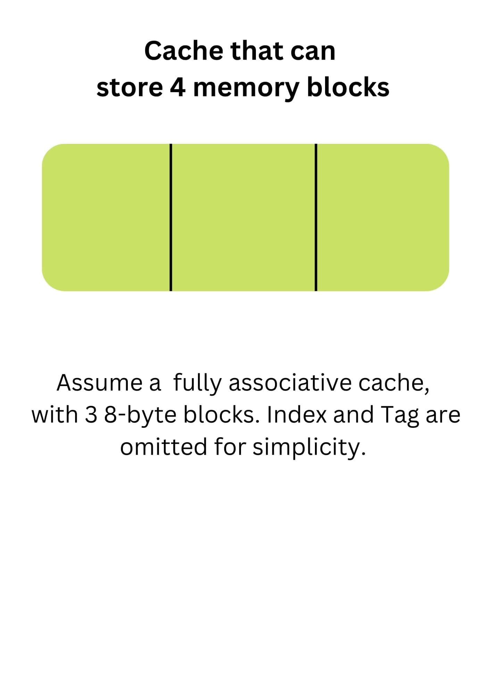
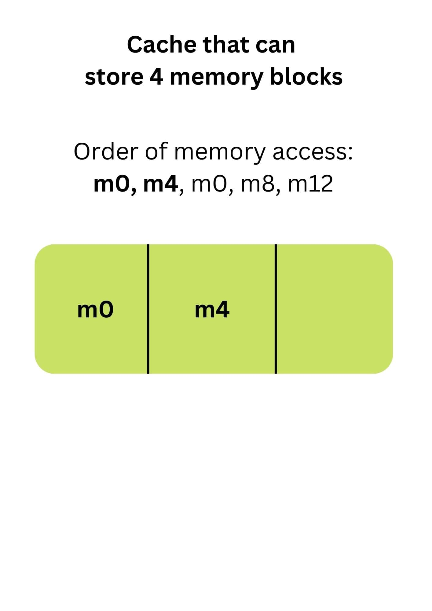
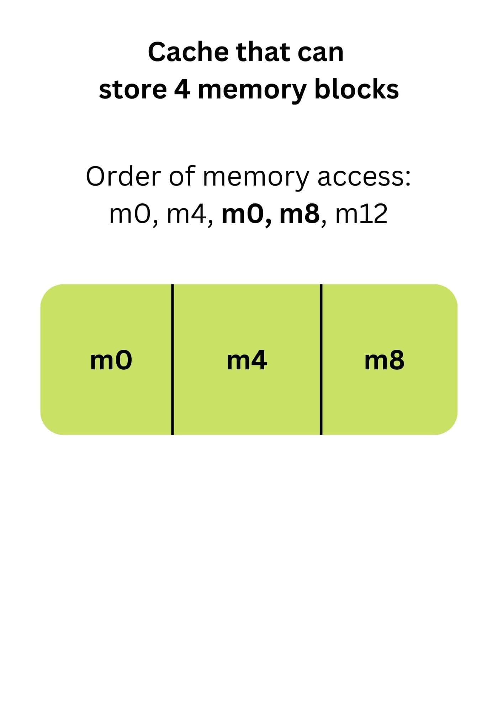
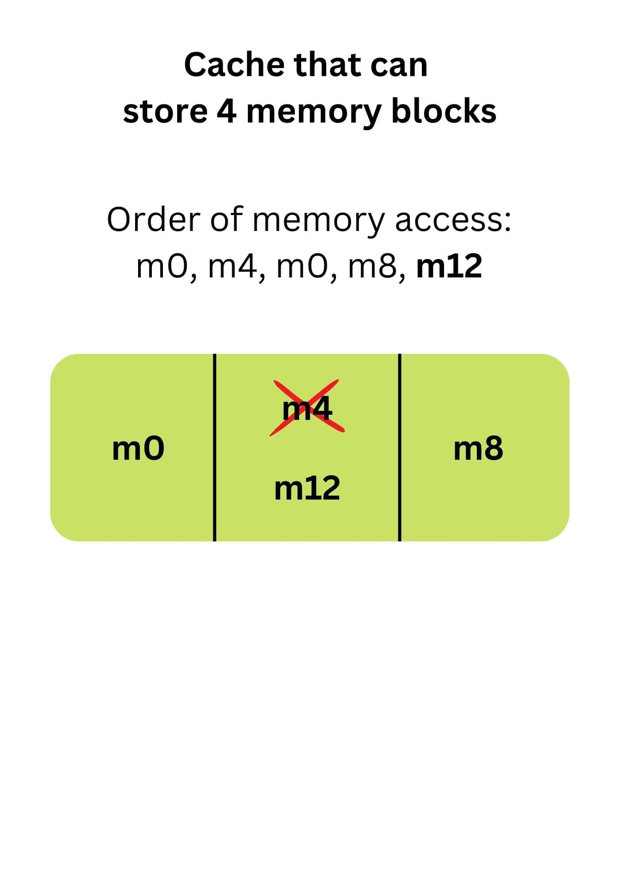

The Beginner's Guide to Cache and LRU
An Introduction to These Essential Computer Science Concepts


Introduction
In this article, I will be sharing more about cache and the Least Recently Used (LRU). Most of the content from this article is a watered-down summary of my Computer Organisation cache topic (credits to NUS CS2100 course).
Content Page
What is Cache
Cache is a type of memory that allows for high-speed retrieval. With the cache memory, for example, you will be able to access information much quicker compared to reading the information directly from your hard disk. I know it might sound a bit abstract right now, but let me explain with the library analogy my Computer Science professor once taught.
Analogy for hard disk as library (credits canva)
Imagine your hard disk memory (which stores all your information or data) is like a physical library and the books are your information. Everytime you wish to search for some data, you would need to look through the entire library, shelves after shelves, for that specific book. How inefficient! What’s worse is that you need to place the book back on the shelf before taking another book.
Analogy for nearby table as cache (credits canva)
Now, how can we optimize this? What if you already know the books that you are likely to need and take all of them at once, and place them on a nearby desk? Wouldn’t that be much faster? And that is how cache works! The main idea is to keep the commonly used information in a smaller and faster memory.
Just some more additional information, there are many types of cache, and a few examples are direct mapped cache, set associative cache and fully associative cache. I will not be covering these different caches in this article, but they mainly differ in the way they handle cache misses. I will share more about cache misses and subsequently the Least Recently Used (LRU) policy.
Cache Miss
Studio is 1101’s version of tutorial, which is another 2 hours of class and they are lessons conducted by Avengers (i.e. your Teaching Assistants, typically a Year 2 CS student). The lessons consist mostly of reviewing the studio worksheet (ungraded homework) and in-class worksheets.
LRU Policy
As the name suggests, the LRU policy suggests that you replace the block of memory (or book) that has not been accessed (or read) for the longest time. Let’s use an example to better understand this concept.

Snapshot of the cache before any information is loaded into it
We have an arbitrary order of memory access: m0, m4, m0, m8, m12, m here refers to the data from the hard disk.

After the first two memory accesses
Data from m0 is required, and it cannot be located in the cache as it is currently empty. As such, m0 from the hard disk is loaded into the cache and gets mapped to the first block. Likewise, m4 from the hard disk is loaded to the second block. This is pretty straightforward.

After the next two memory accesses
Then, we see m0 being accessed again. Luckily, this data is loaded into our cache and we need not load any new blocks from the hard disk. We continue to m8 which is then mapped to the third block.

After the last memory accesses
Now we are at maximum capacity and we need to evict a data block to make space for m12. By LRU policy, data at m4 should be replaced with m12 as it was not used for the longest time, not m0. Although m0 was loaded into the cache first, it is not the least recently used!
While this policy might seem great, one major drawback is that it is difficult to keep track of which is the least recently used, especially if there are many sets of cache blocks. There are also other policies such as FIFO (first in first out) or LFU (least frequently used).
Conclusion
With that, I have covered the theoretical concept of cache and LRU. Hopefully you found this article helpful and with this new understanding, you might be able to crack the famous leetcode question LRU cache haha!